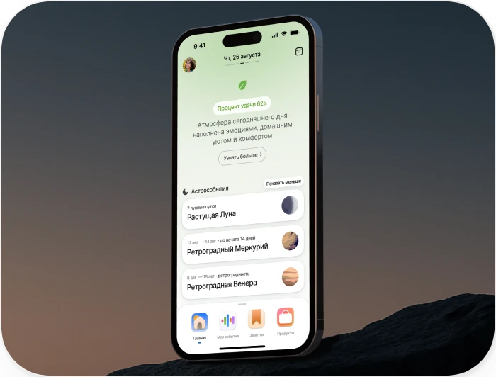

Уменьшение оттока
Product Designer
Retention / UX Research · 2024
UX/UI · Core journeys
Lifecycle communications · Product metrics
Команда: Product · Design
Engineering · Data · Content

Результат
Отток: с 22–24% до 7%
Результаты проекта после серии изменений
- 7%
- минимальный отток
после релиза - 19%
- активных пользователей
включили уведомления - 32%
- включивших уведомления
вернулись через пуши - 8%
- рост вовлечённости
в новый профиль
Продукт
Chronos Plus — астрологический помощник, который помогает в условиях неопределенности ориентироваться в жизни, планировать и принимать решения, а также получать персонализированные рекомендации на основе анализа натальной карты. Приложение работает на базе PWA (Progressive Web App).
Вызов и проблема
К началу проекта отток вырос с 19,7% до 24,56%. Пользователи, отменявшие подписку, говорили, что не понимают, как пользоваться приложением и применять функции к себе.
Гипотеза: проблема была не в отсутствии функций, а в неясном пути от дневного обзора к следующему полезному шагу.
Цель проекта
Снизить отток минимум на 5 п.п., чтобы пользователь быстрее понимал ценность продукта, находил следующий полезный шаг и получал повод вернуться.
JTBD пользователя
«Когда я чувствую неопределённость или планирую важные события, я хочу быстро понять, что происходит, как лучше действовать и на что обратить внимание, без сложной астрологической теории».
Стратегия
Работать с цепочкой удержания, а не с отдельными экранами: найти → понять → использовать → вернуться.
Что показали данные
В начале проекта уже были данные из интервью, обратной связи по отменам, оценки полезности и Google Analytics. Они показывали не отдельную проблему интерфейса, а связанные разрывы в опыте.
Проблемы продукта
- 29%
- не понимали функционал
и ценность - 53%
- пропускали
онбординг - 12%
- отменяли из-за
навигации
Понимание ценности
Пользователи не всегда понимали, как пользоваться приложением и как применять функции к себе. В исследованиях одной из основных проблем было непонимание функционала и ожиданий.
Навигация и следующий шаг
Пользователь видел общий дневной обзор, но не всегда понимал, куда двигаться дальше: к персональным событиям, прогнозам, продуктам, консультациям или настройкам.
Возврат и привычка
Приложение не всегда создавало понятные поводы возвращаться: часть пользователей пропускала онбординг, а продукт не напоминал о себе в нужный момент.
Решения и мой вклад
Стратегия: не чинить отдельные экраны, а перестроить цепочку удержания. Пользователь должен понять ценность, найти нужное действие, получить объяснение в нужный момент и иметь повод вернуться. Поэтому решения сгруппированы в три направления: навигация, объяснение ценности и возврат.
Сделать продукт понятнее
Главный экран давал обзор дня, но не помогал уверенно перейти к ключевым сценариям: событиям, прогнозам, продуктам и консультациям. Я сфокусировал навигацию на следующем действии: хаб-меню стало постоянной точкой входа, путь к «Ленте событий» сократился, а профиль и настройки разделились на более понятные зоны.
Результат
В новом профиле вовлечённость выросла на 8%, а жалоб на изменения не появилось.
Я переработал набор иконок в стилистике обновлённого интерфейса и сделал образы разделов более однозначными, чтобы пользователю было легче ориентироваться.
Объяснить ценность функций
Следующий слой работы был не про новую кнопку, а про интерпретацию. Пользователь видел функцию, но не всегда понимал, что она значит, зачем ей доверять и как применить её к себе. Поэтому «Процент удачи» превратился в «Потенциал дня» с экраном объяснения, контекстными точками входа и переходом к ленте событий.
После изменения точки входа переходы в ленту событий выросли со 123 до 169 за месяц. Взаимодействие через плашку стало почти в 5 раз популярнее, чем через тостер.
53% пользователей пропускали онбординг и начинали работу без базового понимания продукта. Поэтому я сократил первый запуск до ключевых шагов, а остальное обучение перенёс внутрь интерфейса — подсказки появлялись в момент взаимодействия с соответствующей функцией.
Дать поводы возвращаться
Третье направление было про цикл возврата. Внутри продукта нужно было сделать поводы возвращаться понятными и регулярными, а снаружи — аккуратно напоминать о ценных моментах через уведомления.
Результат онбординга
Доля пользователей, прошедших первую ступень онбординга, выросла с 47% до 51%, а обращений «приложение непонятно» стало меньше. Это показало, что проблема была не только в освоении интерфейса, но и в неочевидной ценности продукта.
Внутри продукта: астрособытия сделали опыт живее. Пользователь видел не только общий дневной обзор, но и конкретные события, которые регулярно обновляются и дают повод снова открыть приложение. По данным, астрособытия использовала от трети до половины пользователей, а взаимодействия с ними выросли примерно на 20%.
Внешний триггер
PWA-уведомления стали мягким поводом вернуться в нужный момент. 19% активных пользователей включили уведомления. Из подключивших уведомления 32% вернулись в приложение через пуши.
Как я работал
Я связывал пользовательские сигналы, продуктовые гипотезы, интерфейсные решения и реализацию с командой. В работе участвовали Product, Design, Engineering, Data и Content; моя зона ответственности была в том, чтобы удерживать связь между исследовательскими выводами, логикой продукта и итоговым интерфейсом.
Итоги
Проект длился 7 месяцев: за это время было закрыто 12 этапов и 46 задач. Главный результат — отток снизился с 22–24% до минимальных 7%, а затем стабилизировался около 11%.
- 7%
- минимальный отток
после релиза - ~11%
- стабилизированный
уровень оттока - 46
- задач закрыто
в проекте - 7 мес.
- длительность
проекта
Этот проект показал, что удержание редко ломается в одном экране. Чаще оно зависит от цепочки: понял ли пользователь ценность, нашёл ли нужное действие, получил ли объяснение и появился ли повод вернуться.